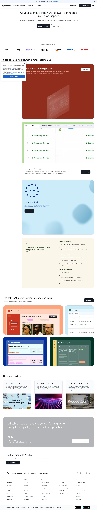

Airtable 主题
Airtable 的 Design.md 主题展示，围绕媒体内容、SaaS 产品、开发工具、浅色界面组织页面。
Spreadsheet-database hybrid. Colorful, friendly, structured data aesthetic.
媒体内容SaaS 产品开发工具浅色界面B2B 产品效率工具专业工具

来源
- 来源
- getdesign.md
- 镜像
- github:VoltAgent/awesome-design-md
- 网站
- https://airtable.com/
- 详情
- https://getdesign.md/airtable/design-md
色板
#181d26: #181d26#0d1218: #0d1218#333840: #333840#41454d: #41454d#dddddd: #dddddd#9297a0: #9297a0#ffffff: #ffffff#f8fafc: #f8fafc#e0e2e6: #e0e2e6#1d1f25: #1d1f25#aa2d00: #aa2d00#0a2e0e: #0a2e0e
字体
display: Haas Groot Dispbody: Haasmono: ui-monospacehints: Haas Groot Disp,Haas,ui-monospace,Inter Display,Inter,Roboto
圆角
control: 6pxcard: 12pxpreview: 12pxpill: 9999pxsource: design-md
间距
xxs: 4pxxs: 8pxsm: 12pxmd: 16pxlg: 24pxxl: 32pxxxl: 48pxsection: 96pxsource: design-md
使用建议
建议
- 建议：Keep {component.button-primary} near-black. The brand's primary CTA is {colors.primary}, not the link blue. Mixing them up turns a confident hero into a confused one。
- 建议：Reserve {component.button-primary} for one primary action per viewport. The system is designed for scarcity at the brand-action layer。
- 建议：Use {component.button-secondary} (white with hairline outline) as the natural pair with {component.button-primary}. The two together form Airtable's signature button row。
- 建议：Trust whitespace as the hero atmosphere. Hero bands are intentionally calm — no gradient, no mesh, no atmospheric backdrop. Going against this reads as off-brand。
- 建议：Use {component.signature-coral-card}, {component.signature-forest-card}, and {component.hero-card-dark} to break editorial monotony. These are the brand's voltage moments。
避免
- 避免：make {colors.link} (#1b61c9) the primary button color. It is the link color. The primary button is {colors.primary} (#181d26, near-black). Treating link-blue as the brand action is the most common mistake when reading Airtable's CSS variables。
- 避免：add a gradient backdrop to the hero. Airtable's hero is white, full stop. Mesh, aurora, spotlight gradients all read as "another SaaS template" — not Airtable。
- 避免：bold display-weight type. {typography.display-xl} and {typography.display-lg} are intentionally weight 400 / 500 — going to 700 reads as marketing-page-template。
- 避免：use {rounded.pill} outside the pricing surface. It's a sub-system signal, not a general radius option。
- 避免：repeat the same surface mode in two consecutive bands. The editorial pacing depends on rhythm: white → signature card → white → cream → dark → white. Two whites in a row read as a typography blog。
查看 DESIGN.md